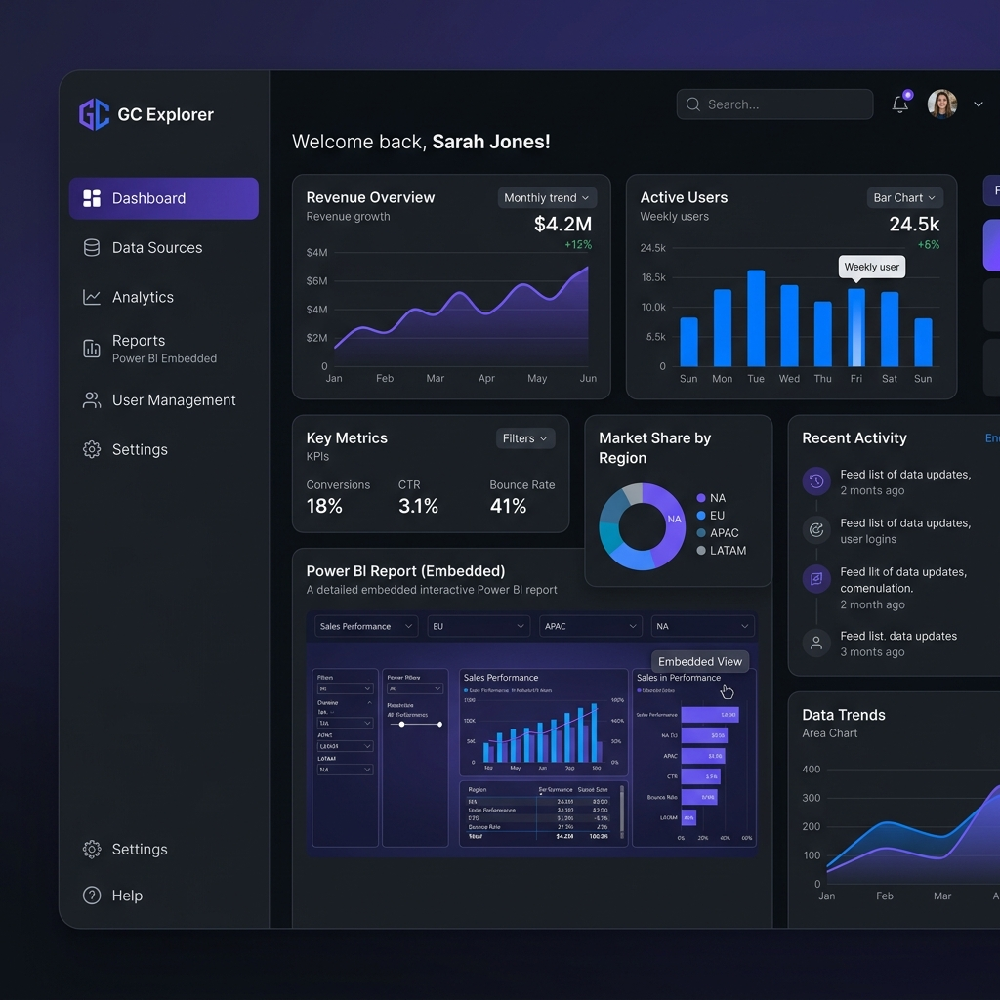
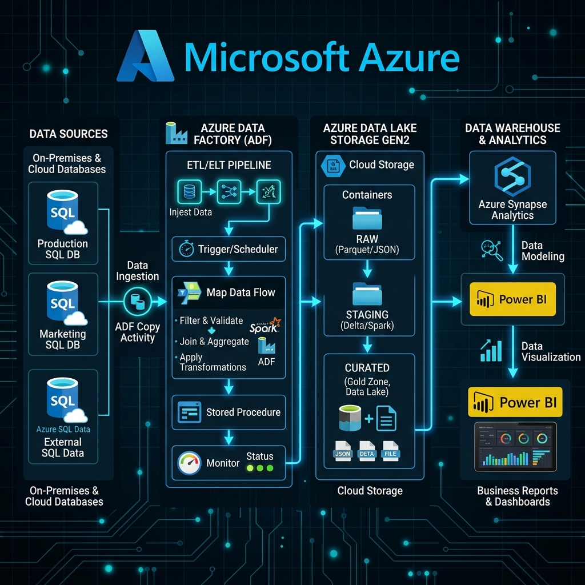
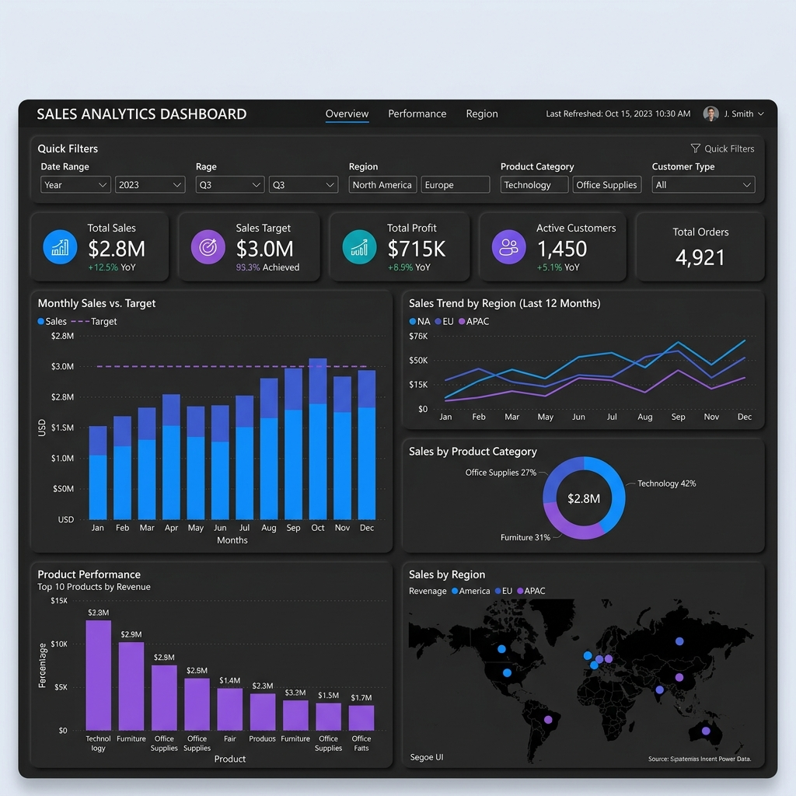
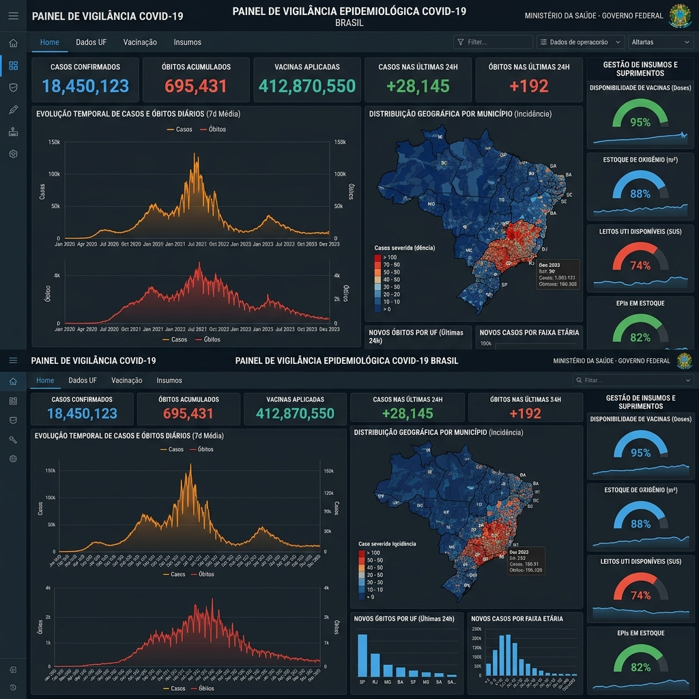
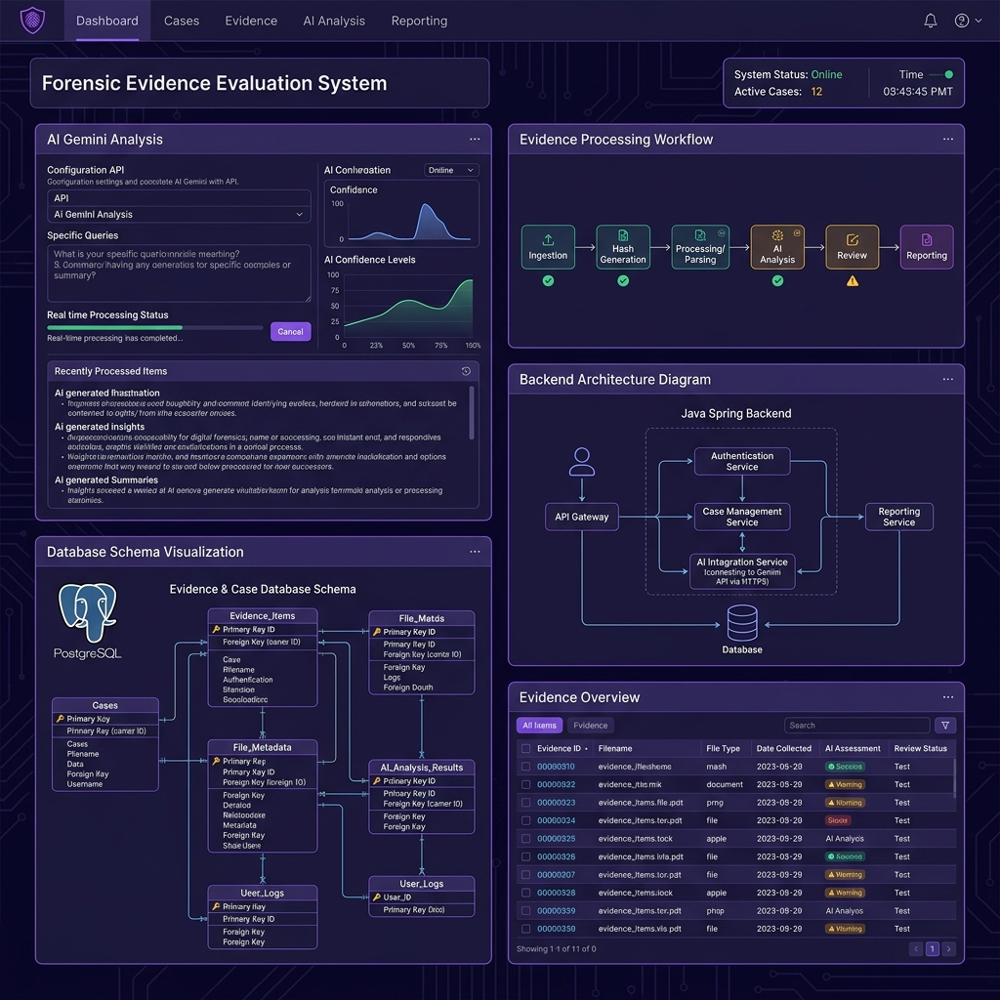

Desenvolvo APIs, sistemas web e automações que eliminam processos manuais e escalam negócios. Backend Python · FastAPI · Automação · Cloud Azure.
Olá! Sou Gabriel Melo, desenvolvedor backend e especialista em automação de processos. Construo APIs REST, plataformas SaaS e soluções que substituem trabalho manual por sistemas automatizados, escaláveis e confiáveis.
Com atuação na liderança técnica de produtos SaaS, arquitetei e desenvolvi do zero sistemas de autenticação corporativa, pipelines ETL em nuvem e microsserviços integrados com IA generativa — sempre com foco em impacto real para o negócio.
Minha abordagem une desenvolvimento backend sólido com uma visão estratégica: automatizo o que é repetitivo para liberar tempo e reduzir erros, entregando sistemas que crescem junto com a empresa.
APIs RESTful com FastAPI/Python, autenticação OAuth2 e arquitetura SaaS multi-tenant
Elimino tarefas manuais com Python, pipelines ETL em nuvem e integrações N8N
Deploy containerizado na Azure, integração com OpenAI, Microsoft Entra ID e REST APIs externas
UNINTER · 2024 – 2026
Tecnologias que uso para construir sistemas web e automações
Projetos reais desenvolvidos ao longo da minha carreira — cada um com contexto, stack e resultados detalhados

Desenvolvimento completo do backend de uma plataforma SaaS multi-tenant para gestão e consumo centralizado de dashboards Power BI. Empresas clientes acessam seus relatórios com controle de acesso por usuário/empresa, planos de assinatura e autenticação corporativa via Microsoft Entra ID (OAuth2). Fui responsável por toda a arquitetura, modelagem de banco de dados com SQLAlchemy e integração com IA generativa.

Liderança e desenvolvimento de integração completa em nuvem de bancos de dados de múltiplos clientes. Substituiu por completo extrações e tratamentos manuais feitos em Excel, migrando para uma arquitetura automatizada e escalável na Microsoft Azure — desde a extração de fontes heterogêneas até a carga no Azure Blob Storage consumido pelo Power BI.

Desenvolvimento de dashboards financeiros e comerciais de ponta a ponta no Power BI — principal fonte de receita da empresa. Entregues desde a modelagem dimensional (Star Schema) e ETL no Power Query com M Language, até medidas DAX avançadas e identidade visual criada no Figma. Publicados com atualização automática via Gateway e usados pelos clientes em processos de melhoria contínua.

Criação de dashboards para acompanhamento de gestão de insumos e agravos epidemiológicos no município de Itabuna/BA. Consolidava dados de notificações de COVID-19, estoque de insumos da rede de saúde e indicadores de vigilância epidemiológica — usados pela gestão municipal para tomada de decisão durante a pandemia. Em operação por 5 anos.

Desenvolvimento de microsserviços com Java Spring Boot para processamento e integração de evidências digitais em contexto forense. O DEEP combina modelagem relacional SQL com IA generativa via Google Gemini API para análise automatizada de evidências digitais. Projeto open-source hospedado na organização institute-atri no GitHub.
Desenvolvimento de soluções em Python e VBA para automação da coleta de dados do agravo de COVID-19 nos sistemas governamentais (SINAN/e-SUS). O processo, antes feito manualmente pelos servidores, passou a ser executado automaticamente, gerando os arquivos para o boletim epidemiológico diário do município — reduzindo horas de trabalho e eliminando erros nos relatórios enviados ao Estado da Bahia.
Atuo com o Gabriel no desenvolvimento de dashboards e posso destacar seu alto domínio técnico em análise de dados.
Tive a oportunidade de trabalhar com Gabriel e posso destacar sua excelente comunicação, sua eficiência na resolução de problemas e sua facilidade em contribuir de forma prática para o desenvolvimento das atividades da equipe.
Gabriel é um profissional analítico, detalhista e com uma vontade de aprender contagiante. Sua paciência e foco na qualidade o tornam um ativo valioso para qualquer equipe que busque precisão e crescimento constante. Recomendo muito seu trabalho!
Tem um sistema web, automação ou API para desenvolver? Manda mensagem e vamos conversar!